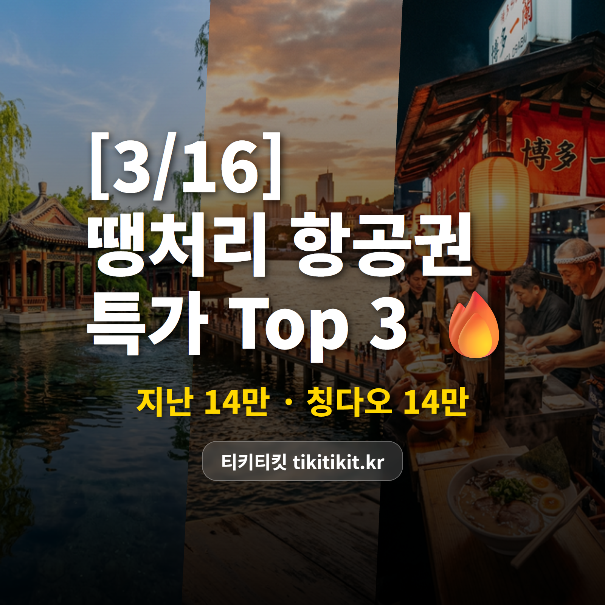

[3/16] 땡처리 항공권 특가 TOP 3 | 지난 13만원, 칭다오 14만원 ✈️

오늘 진짜 괜찮은 가격이 떴어요 🔥
지난 왕복 13만원대,
이 가격이면 고민하면 늦어요!
🏆 3/16 추천 특가 TOP3
🥇 1위
인천 ↔ 지난
에어로케이 · 4/4(토)~4/7(화) · 3박 4일
139,000원

천하제일의 샘, 바오투취안 공원 ⛲
🥈 2위
청주 ↔ 칭다오 (중국)
에어로케이 · 3/22(일)~3/24(화) · 2박 3일
143,000원

바다 앞 노천 맥주집에서 건배 🍻
🥉 3위
인천 ↔ 후쿠오카 (일본)
에어서울 · 4/6(월)~4/9(목) · 3박 4일
227,100원

🌸 3월 말~4월 초 후쿠오카는 마이즈루 공원 벚꽃이 절정!
하카타 라멘 + 벚꽃 산책, 꿀조합 🌸
※ 유류할증료/텍스 포함 왕복 총액 기준
※ 좌석이 빠지면 가격이 바뀌거나 사라질 수 있어요.
💡 에디터 픽 : 1위 인천-지난
인천-지난 왕복 139,000원!
에어로케이 직항으로
3박 4일 알찬 일정입니다.
천하제일의 샘, 바오투취안 공원 ⛲
대명호 산책하며 여유로운 하루!
왕복 13만9,000원에 이 정도면
중국 역사와 자연이 어우러진 도시.
다양한 일정이 열려 있으니
마음에 드는 날짜를 골라보세요!
📌 인천 출발은 뭐가 있을까?
이번 인천 출발 추천 라인업!

✈️ 지난 139,000원 (에어로케이)
4/4~4/7 · 3박 4일 가성비 여행!

✈️ 타이베이 239,000원 (스쿠트항공)
4/2~4/5 · 3박 4일 가성비 여행!

✈️ 웨이하이 245,000원 (제주항공)
3/21~3/23 · 2박 3일 가성비 여행!
✨ 이번 주 항공권 꿀팁
🌸 일본 벚꽃 시즌 TIP: 3월 말~4월 초가 절정! 규슈(후쿠오카·나가사키)가 가장 빨리 피고, 도쿄는 4월 초가 피크입니다.
🇨🇳 중국 현지 결제는 알리페이/위챗페이가 필수! 출발 전 앱 설정해두세요.
✈️ 지방 출발은 공항 인파도 적어서 체크인·보안검색이 훨씬 빠릅니다.
오늘 소개한 특가 외에도
매일 새로운 땡처리 항공권이 올라오고 있어요.
혹시 원하는 날짜나 목적지가 따로 있다면
한번 들러서 확인해보세요 😊
#땡처리항공권 #특가항공권 #항공권싸게사는법 #항공권최저가 #해외여행꿀팁 #티키티킷 #3월항공권 #3월해외여행 #지난여행 #칭다오여행 #후쿠오카여행